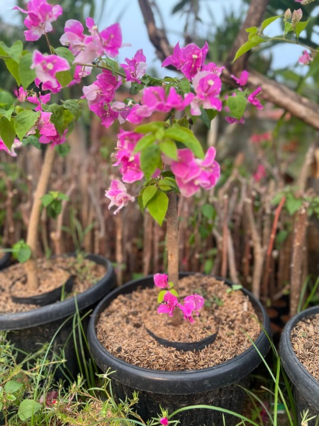

Tanaman hias memiliki beragam jenis dengan karakteristik yang berbeda-beda. Salah satu tanaman yang cukup dikenal dan banyak dijadikan sebagai tanaman hias adalah Bougenville. Tanaman ini memiliki berbagai variasi warna dan bentuk yang membuatnya memiliki daya tarik tersendiri bagi pecinta tanaman. Selain itu, Bougenville dapat ditanam di dalam pot maupun secara langsung pada tanah sehingga dapat disesuaikan dengan kondisi tempat yang tersedia. Namun, untuk menjaga pertumbuhan tanaman tetap baik, Bougenville juga membutuhkan perawatan yang sesuai.
Mengenal Tanaman Bougenville
Bougenville merupakan tanaman hias yang dikenal luas melalui bagian seludang bunganya yang tipis menyerupai kertas dengan warna yang sangat beragam. Spektrum warna yang dapat ditemukan pada tanaman Bougenville antara lain merah menyala, merah muda (pink), putih bersih, ungu royal, jingga (oranye), serta beberapa variasi kombinasi gradasi (sembur) lainnya. Keberagaman tersebut membuat Bougenville memiliki banyak pilihan bagi masyarakat yang memiliki ketertarikan terhadap estetika tanaman hias outdoor.
Selain warna, ukuran tanaman juga menjadi aspek krusial yang perlu diperhatikan. Pemilihan ukuran yang tepat dan proporsional dapat membuat tanaman terlihat harmonis dengan area penempatannya, baik sebagai aksen teras maupun lanskap taman, tanpa membuat ruangan atau halaman terasa terlalu padat dan penuh.
Bougenville juga memiliki keunggulan adaptasi tinggi pada berbagai kondisi penanaman. Tanaman ini dapat ditempatkan di dalam pot keramik, pot terakota, maupun ditanam langsung pada tanah pekarangan. Pemilihan tempat penanaman tentu perlu disesuaikan dengan intensitas pencahayaan alami dan ketersediaan ruang di hunian Anda.

Apa Saja Ragam Bougenville yang Dapat Ditemukan?
Bougenville memiliki ragam variasi yang dapat dibedakan berdasarkan corak warna bunga, ukuran tajuk tanaman, serta bentuk pola pertumbuhannya. Perbedaan-perbedaan karakteristik tersebut menjadi pertimbangan utama saat seseorang ingin memperindah hunian:
- Variasi Warna Memukau Bougenville hadir dalam variasi warna merah berani, merah muda lembut, putih elegan, hingga ungu eksotis yang mampu memberikan kontras visual hidup pada lingkungan sekitar.
- Pilihan Skala dan Ukuran Tanaman dapat ditemukan dalam ukuran mini (bonsai bougenville pot kecil) hingga spesimen pohon rimbun bertajuk besar sesuai dengan usia serta proses pertumbuhannya di kebun budidaya.
- Bentuk Tajuk & Ranting Fleksibel Dapat dirambatkan pada pagar kanopi, dibentuk bulat padat, atau dibiarkan tumbuh natural mengikuti desain lanskap taman impian.
Keragaman tersebut memberikan fleksibilitas penuh bagi pecinta tanaman dalam memilih spesimen yang paling selaras dengan selera pribadi dan kebutuhan ruang terbuka hijau di rumah mereka.
Apa yang Membuat Bougenville Menarik sebagai Tanaman Hias?
Daya tarik utama Bougenville terletak pada kemampuannya berbunga sangat lebat hingga menutupi sebagian besar daunnya ketika berada dalam fase berbunga penuh. Di iklim tropis Indonesia, Bougenville terkenal tahan terhadap cuaca panas terik dan tidak rewel.
Fleksibilitas penanaman dalam pot (tabulampot) maupun langsung di tanah pekarangan memberikan kebebasan bagi pemilik rumah yang memiliki lahan terbatas. Cukup letakkan di spot yang terkena limpahan sinar matahari penuh, maka Bougenville akan tumbuh prima sepanjang musim.
Bintang Jaya Farm dan Bougenville
Bintang Jaya Farm hadir sebagai penyedia tanaman hias terpercaya yang mengkhususkan diri dalam pembudidayaan dan perawatan aneka ragam Bougenville unggulan. Kami menyediakan tanaman pilihan dengan berbagai klasifikasi ukuran, variasi warna bunga yang telah terseleksi sehat, serta percabangan yang kokoh.
Dalam menghadirkan tanaman ke tangan pembeli, kondisi vitalitas tanaman selalu menjadi prioritas kami. Setiap spesimen Bougenville melewati proses karantina, pemupukan nutrisi berimbang, dan pemangkasan sanitasi di kebun kami sebelum dikirimkan. Tim ahli Bintang Jaya Farm juga siap memberikan panduan konsultasi pemilihan varietas yang paling cocok dengan lokasi halaman Anda.
Bagaimana Cara Merawat Tanaman Bougenville?
Merawat Bougenville sebenarnya sangat mudah dan ramah bagi pemula asalkan memenuhi empat pilar dasar perawatan berikut:
- Memperhatikan Kebutuhan Cahaya Matahari Penuh (Full Sun) Bougenville merupakan tanaman pencinta sinar matahari sejati. Pastikan tanaman mendapatkan paparan sinar matahari langsung minimal 5 hingga 6 jam setiap hari agar proses pembentukan kuncup bunga berjalan optimal.
- Melakukan Penyiraman Secara Terukur Bougenville lebih menyukai kondisi tanah yang sedikit kering di antara jadwal penyiraman. Lakukan penyiraman secukupnya saat lapisan atas tanah mulai mengering, dan hindari tanah yang tergenang air (becek) karena dapat memicu kerontokan kuncup serta pembusukan akar.
- Memberikan Nutrisi Pemupukan Berkala Berikan pupuk dengan kandungan fosfor (P) dan kalium (K) seimbang setiap 3-4 minggu sekali untuk merangsang keluarnya bunga lebat. Penggunaan pupuk organik kompos juga sangat dianjurkan untuk menjaga kesuburan media tanam.
- Melakukan Pemangkasan Rutin (Pruning) Pangkas ranting yang terlalu panjang, cabang kering, atau tunas air yang tidak produktif setelah periode berbunga selesai. Pemangkasan ini akan memicu tumbuhnya tunas-tunas baru yang siap memunculkan bunga segar berikutnya.
Merawat Bougenville Setelah Dibeli
Ketika tanaman baru saja tiba dari pembibitan Bintang Jaya Farm, beri waktu tanaman untuk beradaptasi dengan lingkungan barunya selama 2-3 hari di tempat yang teduh berangin sebelum langsung diletakkan di bawah terik matahari penuh.
Jaga kelembapan media tanam secara stabil, amati perkembangan tunas daun muda, dan lakukan penyiraman di waktu pagi hari. Perawatan yang konsisten dan penuh kasih akan membuat Bougenville Anda menjadi pusat perhatian yang mempesona di pekarangan rumah sepanjang tahun.
Ingin Memiliki Koleksi Bougenville Berbunga Cantik?
Bintang Jaya Farm menyediakan aneka varietas Bougenville segar siap pajang dengan harga bersahabat dan garansi pengiriman aman ke seluruh wilayah.
Hubungi Kami & Pesan Sekarang